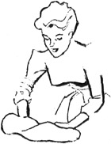

1952—How to Make Hats
by Ruby Carnahan
Cleaning and Remodeling Straw Hats
REMODELING STRAW CROWNS
Straw braid crowns can be raised by reblocking and adding several rows of braid to bottom of crown, or lowered by removing several rows of braid around bottom of crown. Square straw crowns can be made round by reblocking on a round utility block head block.
Round crowns can be made square by fitting a pasteboard to small end of utility head block, and securing pasteboard to block with adhesive tape, then reblock crown on this end of block.
REMODELING STRAW BRIMS
Straw brims can be made smaller by cutting off around brim edge, or made larger by adding a taffeta or velvet fold around brim edge, or a row of hair braid.
If brim is a flat sailor type and a scooped effect would bring hat up to date or be more becoming, cut brim open at center back and lap one side over the other, turning straw edge under and stitch flat.
CLEANING STRAWS
Baku, shantung, or any other straw that will take water can be washed. Remove all ribbons and wires and scrub straw with a brush and lukewarm soapsuds. Rinse in lukewarm water. Reblock straw while still wet, using the same method of blocking as for new straw. When dry after blocking, apply a coat of straw sizing. If the straw is colored, use sizing of the same color. This will renew faded straw. Many straws can be dyed another color.
To freshen a Milan hat, pin brim to a hard surface and steam press into shape. Let dry and size with sizing of the same color.
Many straw braids can be cleaned by wiping off with cleaning fluid. Steam press, pin hat to a flat surface and let dry. Apply a coat of straw sizing and let dry.
CLEANING FABRIC HATS
Clean fabric hats by dipping a small pad into cleaning fluid and rubbing it over hat surface.
Steam velvet hats lightly over a steaming teakettle and brush with a soft brush.